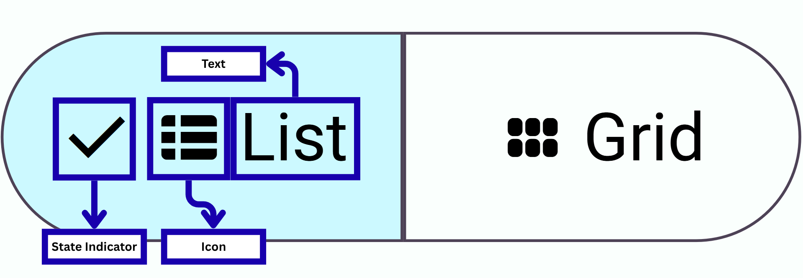

Try it
Main Buttons
On this page:
-
Try it
- Separate button group demo
- Toggle button group demo
- Connected button group demo
- Table of Contents
- Guidelines
- Usage
- Anatomy
- Syntax
-
Modifiers
- Global Attributes
- Toggle
- Connected
- Separate
- Summary
Published by Nishad Bangole
Aug 11, 2025
Guidelines
- Button groups can be separate, toggle, or connected.
- Use button groups to group related actions together.
- Ensure button groups are visually distinct and easy to use.
Usage
- Use button groups to group related buttons together.
- Toggle button groups allow selecting one or more options.
- Connected button groups visually link buttons together.
Anatomy
Syntax
<button>Button 1</button>
<button>Button 2</button>
</button-group>
Modifiers
Toggle
The toggle attribute allows the user to select one or more buttons in the group.
<button>Button 1</button>
<button selected>Button 2</button>
</button-group>
Connected
The connected attribute visually links buttons together in a group.
<button>Button 1</button>
<button>Button 2</button>
</button-group>
Rounded
The rounded attribute applies rounded corners to the buttons in the group.
<button>Button 1</button>
<button>Button 2</button>
</button-group>
Vertical
The vertical attribute arranges the buttons in a column instead of a row.
<button>Button 1</button>
<button>Button 2</button>
</button-group>
Tonal Normal
The tonal-normal attribute applies a tonal style to the buttons in the group.
<button>Button 1</button>
<button>Button 2</button>
</button-group>
Tonal Filled
The tonal-filled attribute applies a filled tonal style to the buttons in the group.
<button>Button 1</button>
<button>Button 2</button>
</button-group>
Selected
The selected attribute indicates the selected state of a button in the group.
<button selected>Button 1</button>
<button>Button 2</button>
</button-group>
Summary
- Button groups group related buttons together.
- They can be separate, toggle, or connected.
- Use attributes like toggle, connected, and separate to modify behavior.